Abandoned village Jablonec
This is visualization of abandoned village Jablonec (Ogfolderhaid). Village was completely (even baroque church) destroyed in 1950s. There is millitary base at this moment.
Earth surface was created from vector-based digital contour model Zabaged. Size of buildings was estimated from cadastral map and old photographies. Modelng procedure text is available here. (czech language only)
That was my first paid job for National Cultural heritage (NAKI) Additional info about this village is here. (czech language only)
Renders
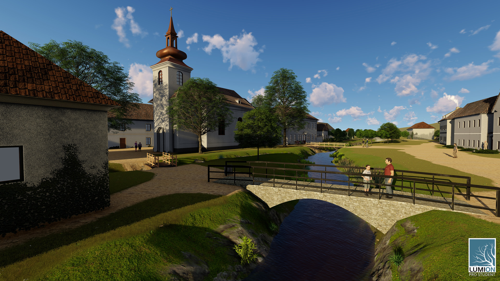
Parish church
{kind=link}
 School
School
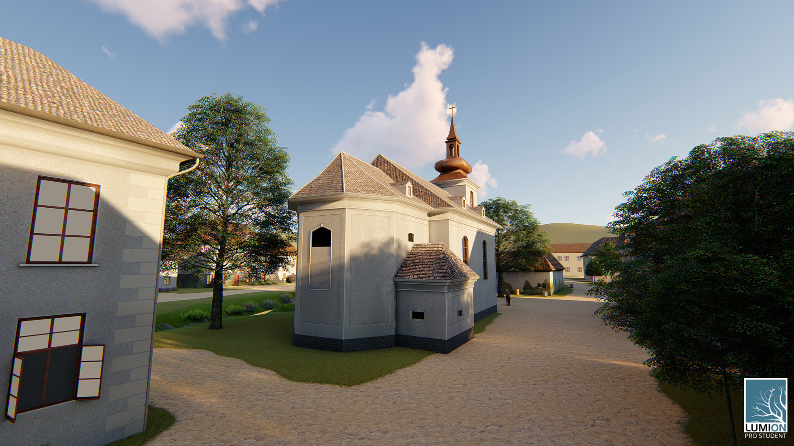
Church from back
{kind=link}
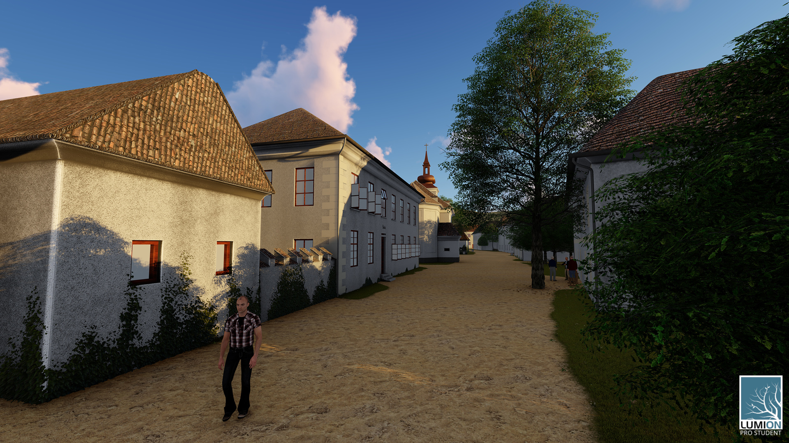
Street and school
{kind=link}
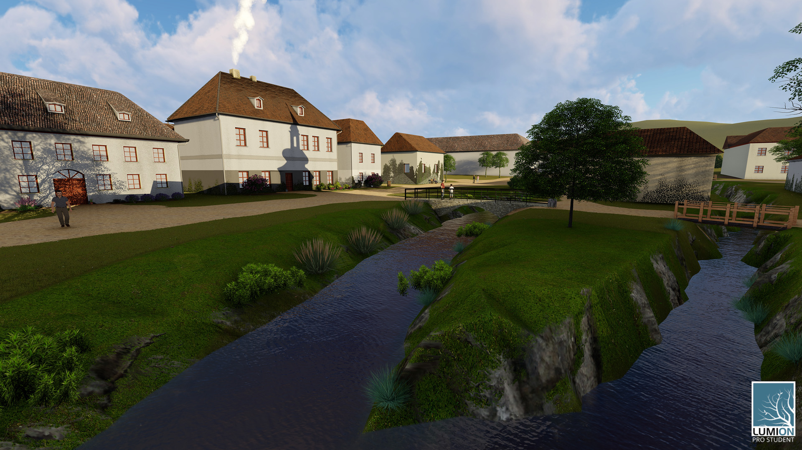
Village-green
{kind=link}
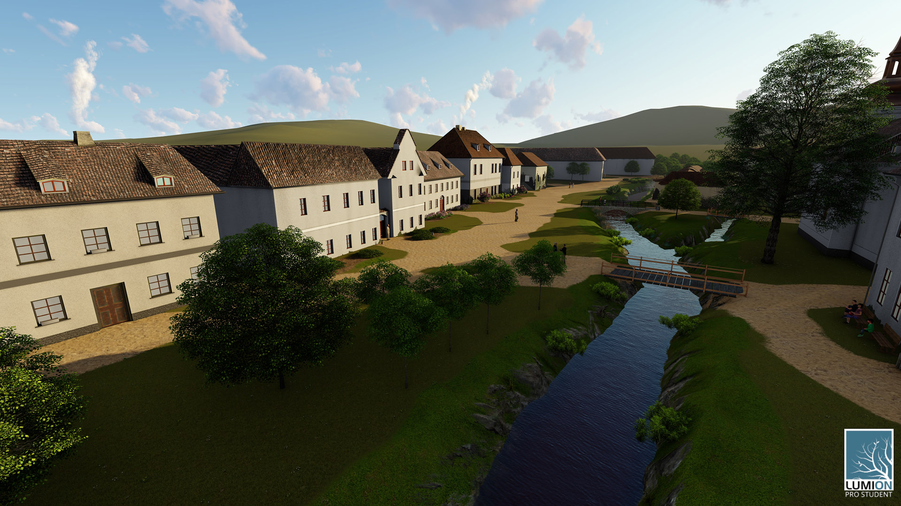
Village-green from top
{kind=link}
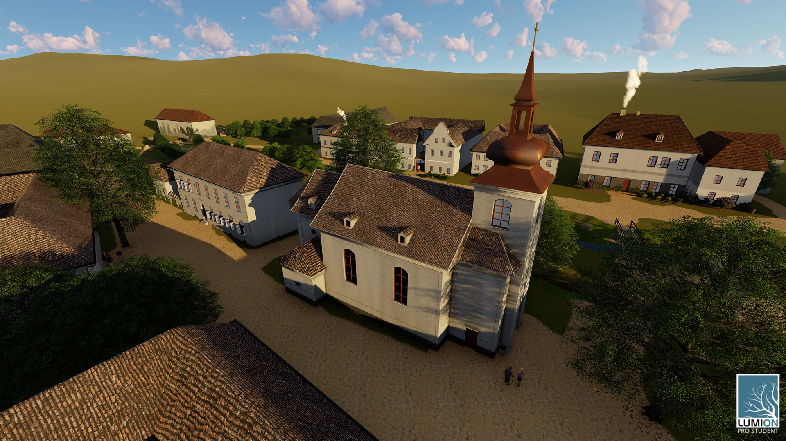
Church from top
{kind=link}
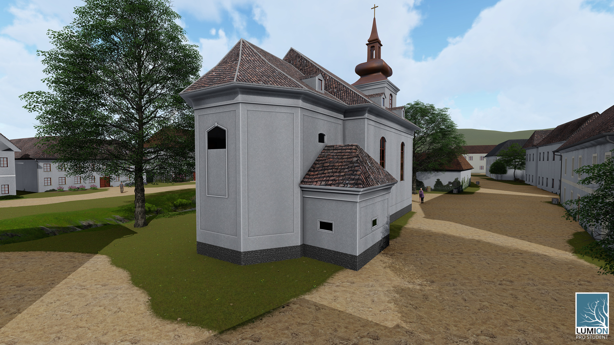
Church from back
{kind=link}
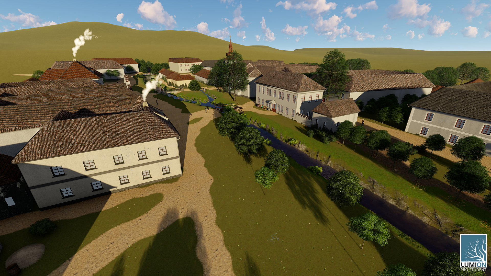
Jablonec and Kmet hill
{kind=link}
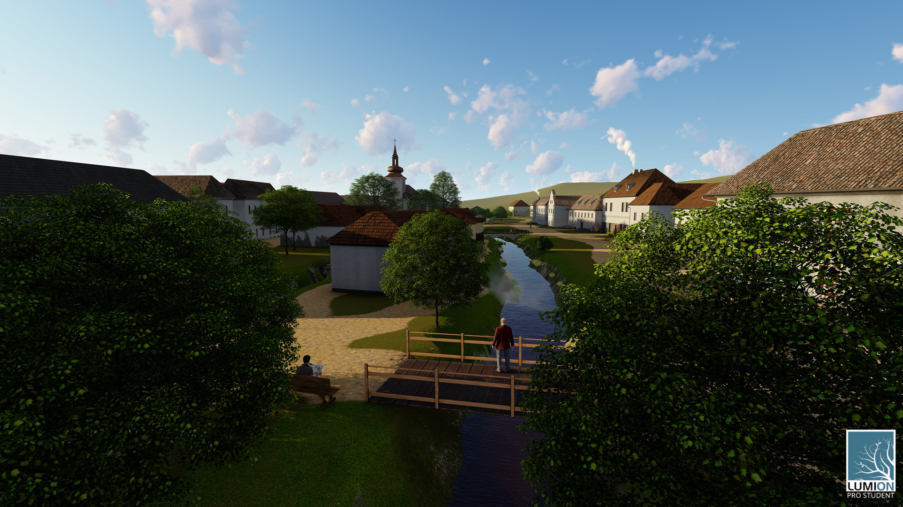
Jablonec from north
{kind=link}
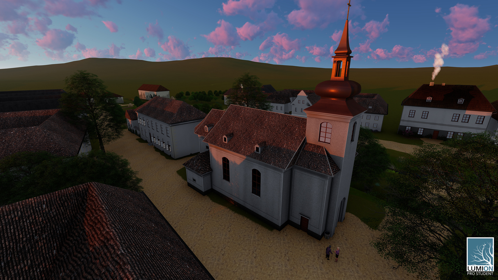
Church in evening
{kind=link}
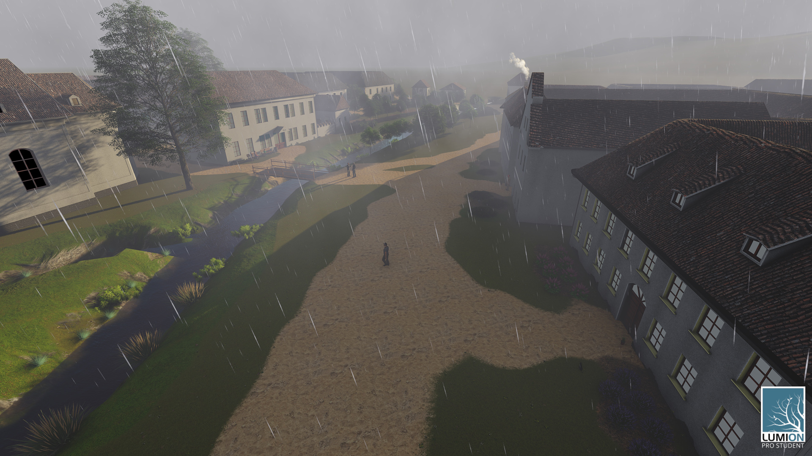
Village-green in rainy weather
{kind=link}
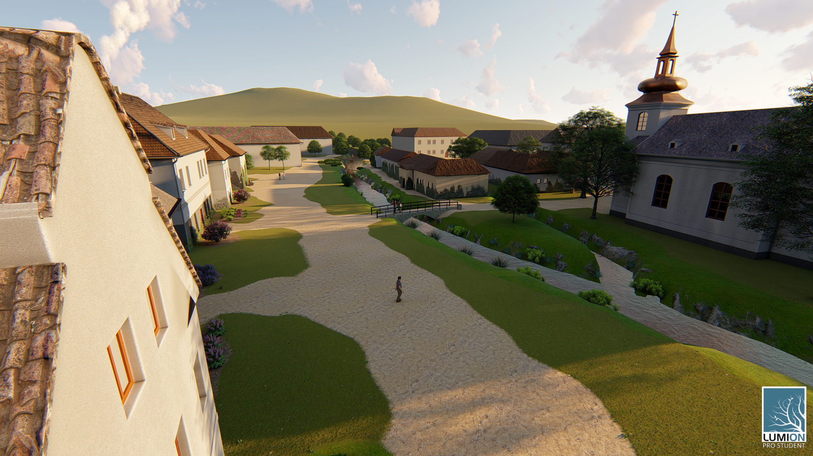
Village-green from west
{kind=link}
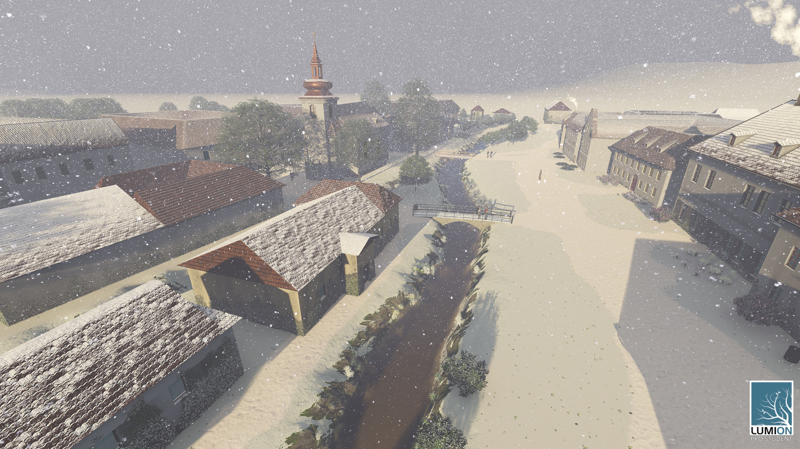
Jablonec in winter
{kind=link}
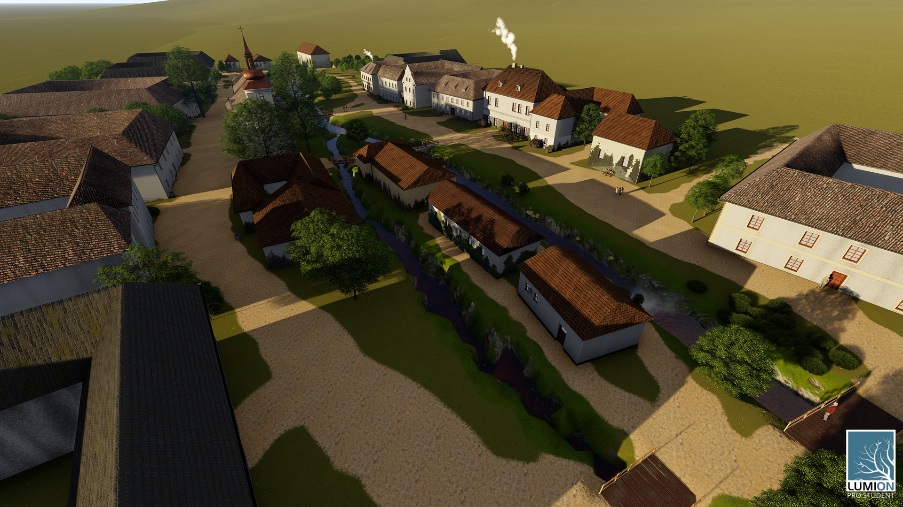
Jablonec from top
{kind=link}
Compare 3D model with old photographs
When you left-click on image it will swap old photo with render
Video
Fly-through the village Jablonec